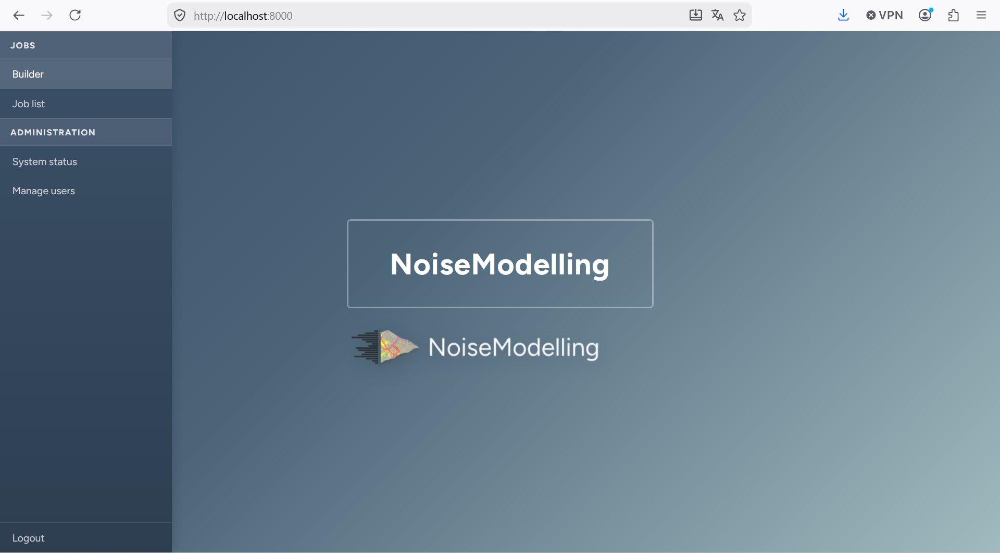
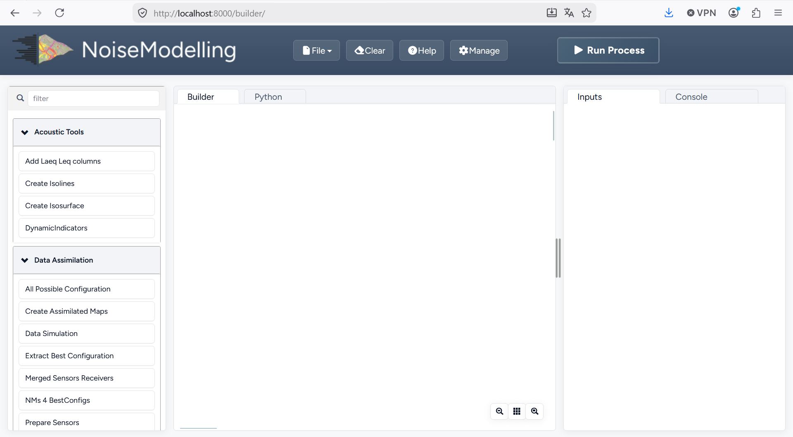

Installation guide
Step 1 : Requirements
Since NoiseModelling is developed with the Java language, you will need to install the Java Runtime Environment (JRE) on your computer to use the application.
NoiseModelling requires Java >= 25. Any version of Java 25 or later is supported.
Windows
If you are launching NoiseModelling thanks to the NoiseModelling_xxx_install.exe file, the JRE is already inside, so you don’t have anything to do.
If you are not using the .exe file, you have to launch NoiseModelling thanks to the `start_windows.bat file (in the NoiseModelling_xxx.zip release file). In this case, Java >= 25 has to be installed before.
Download and install Java: choose between OpenJDK or Oracle versions.
Linux or Mac
If not already done, you have to install the Java version >= 25.
Check whether Java is already installed:
java -version
The command should print a version starting with
25. Otherwise, install Java first.Download and install Java: choose between OpenJDK or Oracle versions.
Find the installation path to use for
JAVA_HOME.On Linux:
readlink -f "$(command -v java)"
This prints a path ending with
/bin/java(for example/usr/lib/jvm/java-25-openjdk-amd64/bin/java);JAVA_HOMEis the parent directory ofbin(here/usr/lib/jvm/java-25-openjdk-amd64).On macOS:
/usr/libexec/java_home -v latest
This prints the directory that must be used as
JAVA_HOMEfor Java.Set the
JAVA_HOMEenvironment variable and update yourPATH(adapt the path with the one found above):export JAVA_HOME=/usr/lib/jvm/java-25-openjdk-amd64 export PATH="$JAVA_HOME/bin:$PATH"
On macOS you can also use:
export JAVA_HOME=$(/usr/libexec/java_home -v latest) export PATH="$JAVA_HOME/bin:$PATH"
Verify that
JAVA_HOMEis correctly set:echo $JAVA_HOME
You should get the Java directory (for example
/usr/lib/jvm/java-25-openjdk-amd64). If this is not the case, you are invited to follow the steps proposed here.
Step 2: Download NoiseModelling
Download the latest release of NoiseModelling on Github.
Windows: you can directly download and run the
NoiseModelling_*.exeinstaller file (or you can also follow the Linux instructions below if you have a working JRE, see previous step)MacOS: you can directly download and run the
NoiseModelling_*.dmginstaller file (or you can also follow the Linux instructions below if you have a working JRE, see previous step)Linux : download the
NoiseModelling_6.x.x.zipfile and unzip it into a chosen directory
Warning
The chosen directory can be anywhere, but make sure you have write access. If you are using a company computer, the Program Files folder is probably not a good idea.
Warning
For Linux and Mac users, please make sure your Java environment is correctly set up (see previous step). Windows users who are using the .exe file are not concerned, since the Java Runtime Environment is already embedded.
Step 3: Start NoiseModelling GUI
As described on the page “Architecture”, NoiseModelling can be used through a Graphical User Interface (GUI) in a web browser.
In this tutorial, we will use the default, already configured H2GIS database.
These tools (WPS Builder and H2GIS) are already included in the archive, so you don’t have to install them separately.
To launch NoiseModelling with the GUI, start it from a command prompt (terminal). This will start a local server on your computer, which provides the GUI as a web application.
Please execute:
Windows:
NoiseModelling.exeorNoiseModelling_xxx\start_windows.batLinux or Mac:
NoiseModelling_xxx/start_linux_macos.sh(make sure the file is allowed to be executed before running it)
Tip
NoiseModelling will stay open as long as the command window is open. If you close it, NoiseModelling will automatically stop and the GUI will no longer be available.
Step 4: Open NoiseModelling GUI
The NoiseModelling GUI is built using the WPS_Builder component and runs as a web application provided by the local server started in Step 3.
By running NoiseModelling your default web browser should have been opened to the http://localhost:8000 address. If not please go to this URL, if something went wrong you should have more information on your terminal.
{kind=link}

Noise Modelling GUI landing page
Click builder to open the builder.
{kind=link}

You are now ready to discover the power of NoiseModelling!